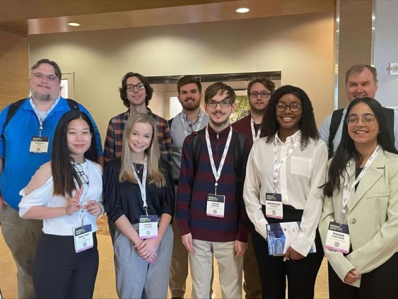
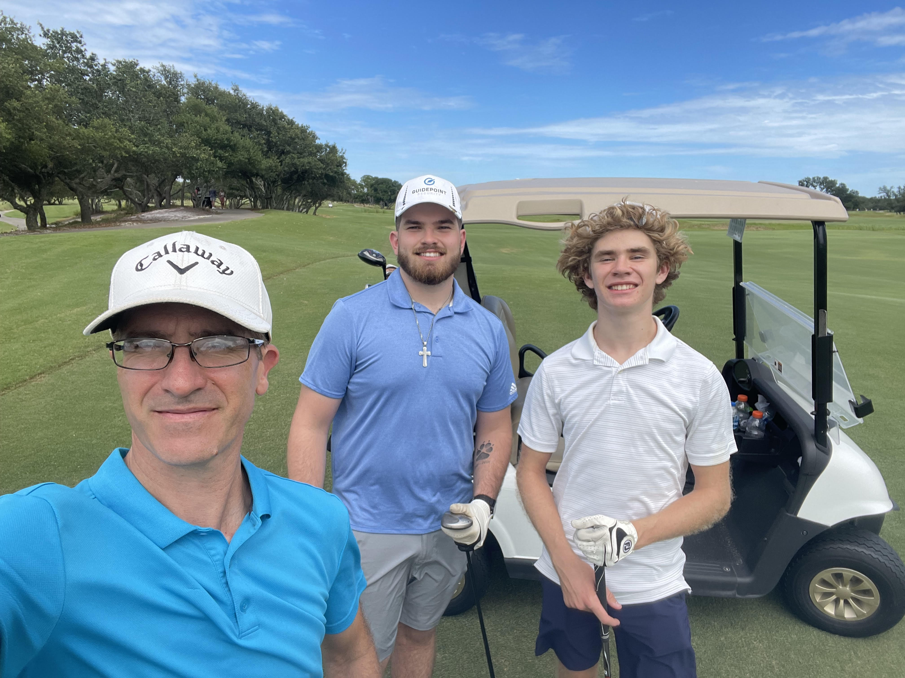
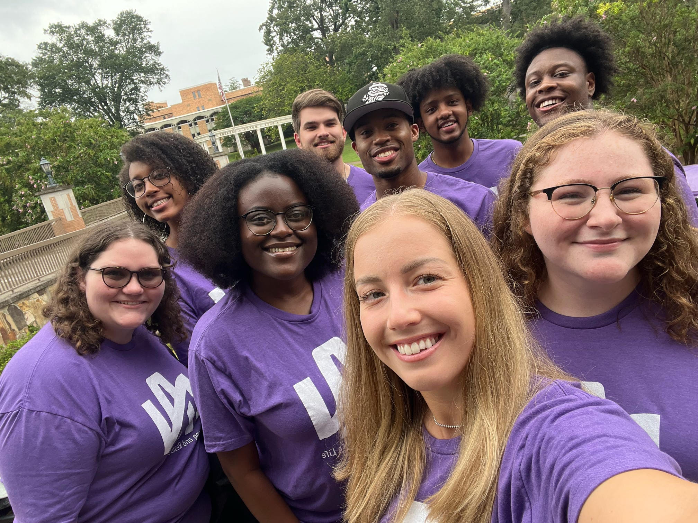

My name is Zachary Handel, and I am a fourth year computer science major at the University of North Alabama with a minor in cybersecurity.
This website is made for others to understand more about me.
My Studies
I have always had a passion for all things technology. Throughout my childhood, I would enjoy watching my dad
do his work which at the time was software development. I might not have understood what he was doing a majority of the time,
but the idea of creating things on a computer caught my eye. I always wanted to express my creativity in a way
that others could still find use in them. This is where I found my interest in application development. Along side this,
I also have a passion for studying topics related to cybersecurity. I have attended the 2022 National Cyber Summit as well as the
2023 South Eastern Cyber Summit. These events were both great experiences and I got to learn a lot of new things that are not offered
at my university. I have also been blessed with the opportunity to work my first coding job as a Software Engineering Intern at nSide | The School Safety Platform.
Working there has created some of the best learning experiences, and I hope to hold a career with them outside of school.

Me with my fellow students and professors attending the 2023 Southeastern Cyber Summit.
Hobbies
I have always loved making music. I grew up playing the drums, but I have also learned piano and guitar along the way.
I have been playing percussion since I was 8 years old. I went on to be a member of the James Clemens High School Drumline
for 4 years where I was percussion captain for 2. I was also the James Clemens Jet Blues Jazz Band drumset player. We once performed
in New Orleans, Louisia at Loyola University where we would win best in class rhythem section. After high school, I was a member of the University
of North Alabama Drumline for 2 years. Now, I enjoy playing and making music on my own time like producing Lofi music and playing my guitar.
Besides playing music, I enjoy playing and making video games, reading, hanging out with my family and friends, serving the Lord, golfing, and working out.
I have gotten more serious about golfing and working out recently. My father got me interested in the sport of golf and now me, my brother, and my father
all enjoy playing together when we can.

Me playing at Kiva Dunes Golf Trail with my Father and Brother.
Organization Involvement
Throughout high school I was part of many different organizations. Some being Tri-M Music Honor Society, and Paws for a Cause.
Like I mentioned above, I was a part of the UNA Marching Pride my first two years at UNA. Being a part of the Marching Pride was an unreal experience and I wish I could go back and participate
again. I was also a brother of the Alpha Mu Lambda Fraternity where I went on to be Secretary for two years. I was also a council member of the Independent Greek Council where I was the Director of Administration.
Now, I have let go of all of those organizations to focus on my studies and I am a member of the Association for Computing Machinery as well as a Resident Advisor at UNA. I will be graduating in May of 2024 where I
hope to continue my involvement in the Flornece Community with my work, church, and alumni class.

Me with my Housing and Residence Life Staff at UNA.